제목은 무엇을 강조할까?
오늘의 목표기사의 제목과 본문을 대조하고 같은 화제를 다룬 다른 기사와 비교해, 기사가 강조하는 관점과 그 판단의 근거를 설명하고, 더 알아보고 싶은 점을 질문으로 써요.

수업 흐름
← → 키로 단계를 넘겨요. 교사 모드를 켜면 발문과 유의점이 함께 보여요.
본문을 열기 전에 제목부터 읽어 봅시다
아시아경제 · 2025. 5. 25.
이베리아반도 대정전이 보여준 재생에너지의 딜레마
기자가 정전의 원인을 어디에서 찾을 것 같나요? 어떤 말 때문에 그렇게 생각했나요?
모둠에서 첫인상을 이야기해 봅시다. 본문을 읽으면 처음 판단이 달라질 수도 있어요.
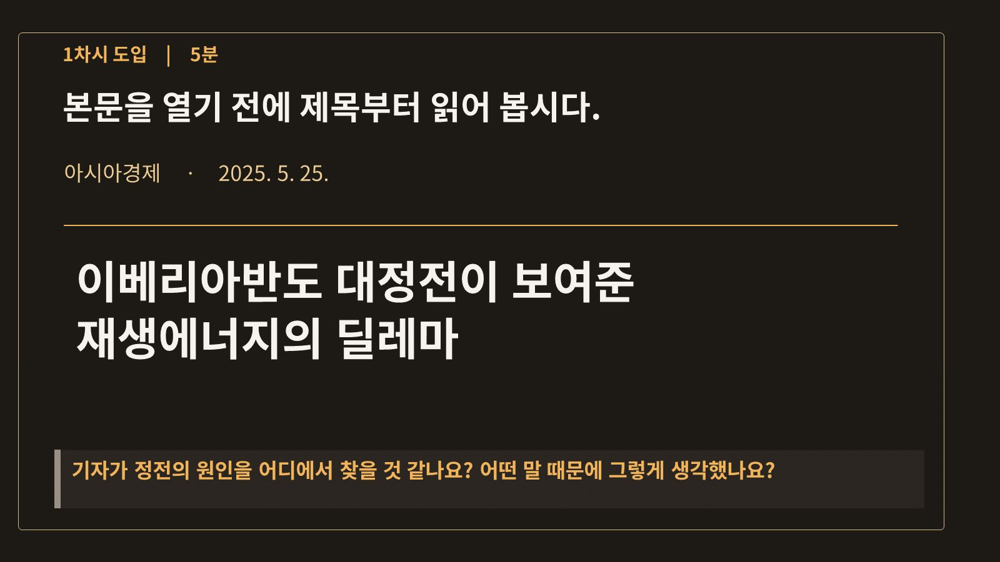
오늘의 목표
기사의 제목과 본문을 대조하고 같은 화제를 다룬 다른 기사와 비교해, 기사가 강조하는 관점과 그 판단의 근거를 설명하고, 더 알아보고 싶은 점을 질문으로 써요.
빅카인즈에서 기사 찾기 · 제목과 본문 함께 읽기
우리 모둠이 읽을 기사 한 편 찾기
비판적으로 읽고 탐구 질문 쓰기
오늘의 기록: 공동 보고서 「기사와 탐구 질문」
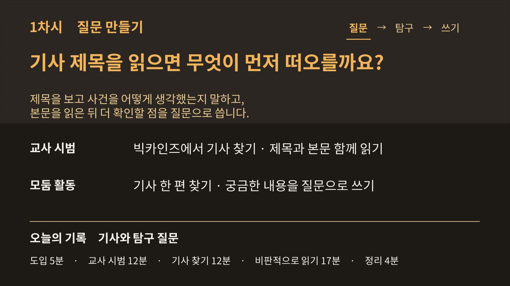
사건 이름으로 검색을 시작해요
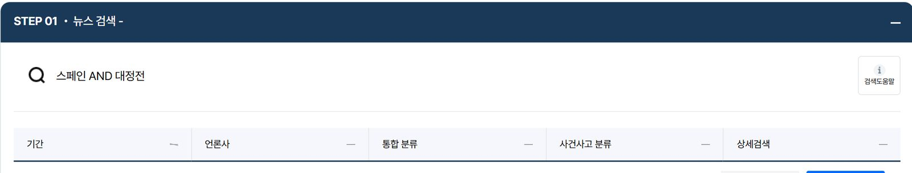
정전이 일어난 때로 기간을 정해요
기간 → 직접입력 2025-04-28 ~ 2025-05-31 → 적용하기
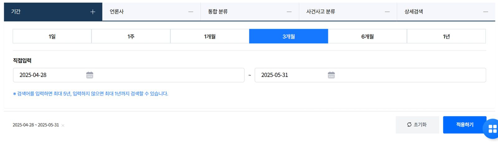
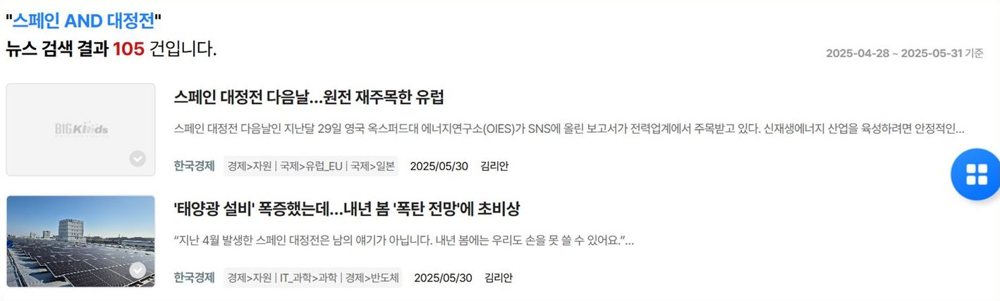
궁금한 쟁점을 검색어에 더해요
STEP 01을 다시 열고 AND 재생에너지를 더한 뒤 적용해요.

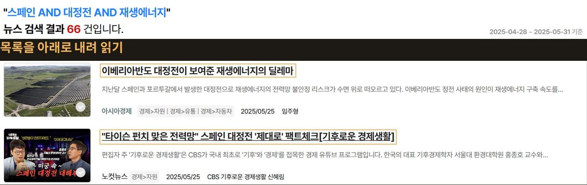
처음부터 ‘재생에너지 때문에’라고 검색하면 어떤 기사를 놓칠까요?
같은 날 나온 두 제목을 읽어 봅시다
두 글은 2025년 4월 28일 스페인·포르투갈에서 일어난 정전을 다뤄요.
각 제목에서 가장 먼저 눈에 들어온 말은 무엇인가요?
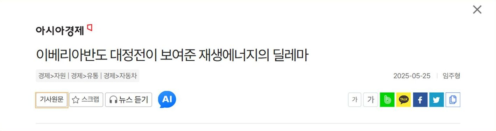
해설과 인터뷰는 어디까지 말했나요?
본문은 “재생에너지 구축 속도를 따라가지 못한 전력망”을 이야기하고, 주파수가 떨어졌지만 저장장치 등이 가동돼 전력 공급이 이어진 영국 사례를 함께 들어요.
진행자가 원인이 밝혀졌는지 묻자, 연구위원은 무엇이 원인이고 무엇이 결과인지조차 아직 완전히 파악하지 못했다고 답해요.
기자는 왜 영국의 사례를 든 걸까요?
프로그램 페이지의 프레이밍 돋보기(사례 2)로 낱말마다 확인해 볼 수 있어요.
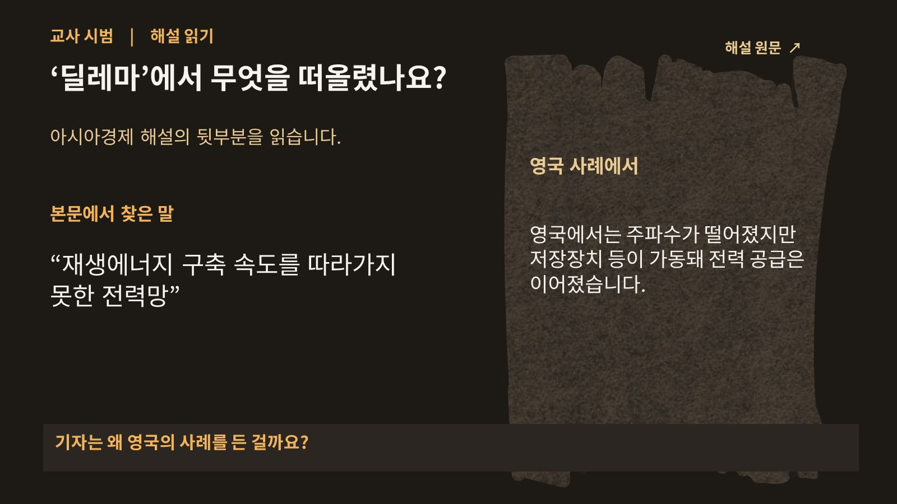
저는 영국 사례를 읽다가 이 점이 궁금해졌어요
탐구할 질문 — 영국에서 주파수가 안정된 사례로 스페인 정전의 원인을 어디까지 설명할 수 있을까?
질문한 이유 기자는 두 나라의 사례를 비교했어요. 인터뷰에서는 원인 조사가 진행 중이라고 했어요. 두 사고가 시작된 조건도 같았는지 궁금해졌어요.
이제 우리 모둠이 읽을 기사 한 편을 골라 봅시다.
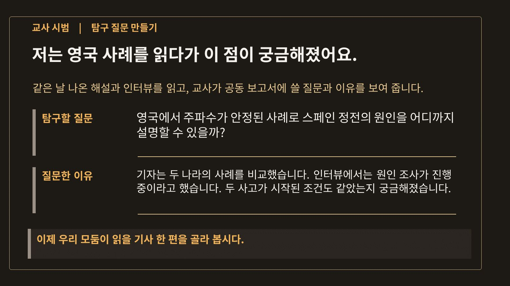
우리 모둠이 읽을 기사 한 편을 고르세요
찾을 말: 스페인 AND 대정전 학교 AND 태양광 폭염 AND 전력수요
- 검색어와 기간, 제목, 언론사, 날짜, 링크를 적어요.
- 제목이나 본문의 어느 말이 궁금했는지, 그 표현을 근거로 고른 이유를 써요.
- 찾기 어렵다면 선생님이 준 수업용 기사 「학교마다 전기료 연 1천만 원 줄어든다」를 골라도 돼요.
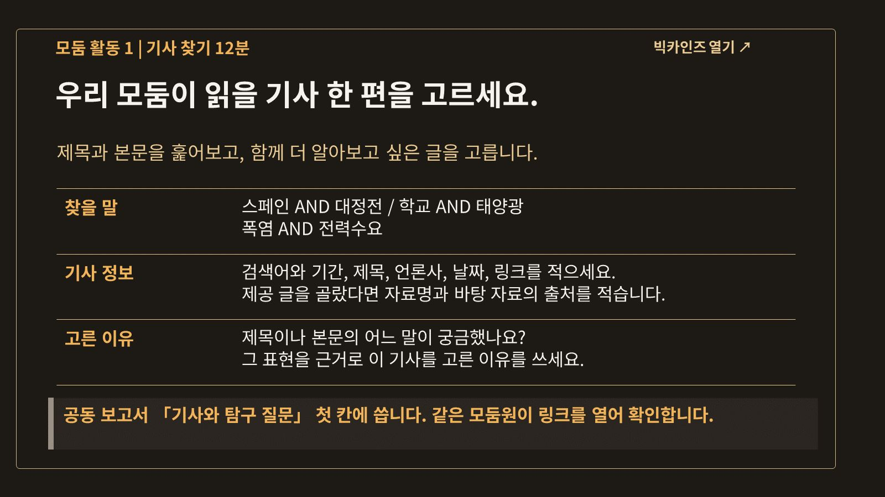
수업용 기사 펼쳐 읽기
학교마다 전기료 연 1천만 원 줄어든다
학교 지붕에서 만든 전기로 교실의 불을 켜면 전기요금이 얼마나 줄까? 교육부는 2026년 2월 26일 ‘햇빛이음학교’ 계획을 발표했다. 낮에 학교 지붕에서 만든 전기를 학교에서 쓰겠다는 구상이다. 교육부는 50킬로와트(kW) 설비를 설치한 학교의 연간 전기요금 절감액을 약 1천만 원으로 예상했다. 노후 건물 등 설치가 어려운 학교도 있다. 교육부는 학생들이 학교의 발전량을 확인하고 그 기록을 수업에 활용할 수 있도록 할 계획이다.
교육부 브리핑을 바탕으로 쓴 수업용 기사 · 교육부 브리핑 ↗
어떤 표현을 보고 그렇게 생각했나요?
제목에서 눈에 띈 말을 가리고 읽어 보세요. 그 말을 보고 어떤 원인이나 효과를 떠올렸나요?
처음 생각을 뒷받침하거나 바꾸게 한 구절. 기자의 설명인가요, 인용한 사람의 말인가요?
사건의 어떤 점을 강조하나요? 제목과 본문의 표현을 근거로 설명해요.
고른 기사 한 편을 함께 읽고, 세 질문에 대한 답을 공동 보고서에 써요.
활동지 ② 비판적으로 읽기에 쓰기 ↓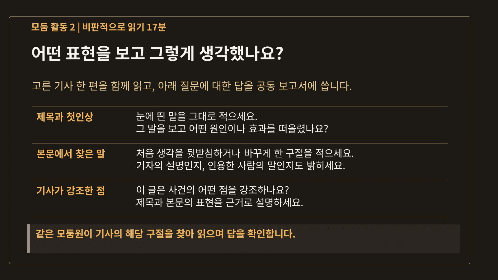
예시답안 — 학교 태양광 글을 고른 모둠
제목과 첫인상 ‘학교마다’를 보고, 어느 학교든 해마다 같은 금액을 아낄 수 있다고 생각했다.
본문과 프레이밍 본문에는 ‘50kW’ 조건과 설치가 어려운 학교가 나온다. 제목은 설치 조건보다 전기요금 절감 효과를 강조했다.
질문과 이유 모든 학교가 같은 금액을 아낄 수 있을까? 제목과 달리 본문에 조건이 있어, 예상액의 근거가 궁금하다.
기사만으로 답하기 어려운 점은 무엇인가요?
- 탐구 질문 — 확인할 대상과 조건이 드러나게 써요.
- 질문한 이유 — 어느 표현과 어느 구절을 읽고 질문이 생겼는지, 처음 생각이 어떻게 달라졌는지.
- 다음에 찾을 자료 — 기사에 나온 기관이나 자료 이름, 그 자료에서 확인할 말.
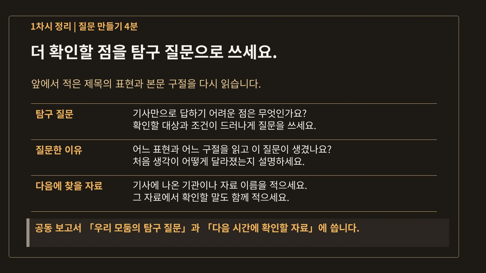
예시 — 다음에 찾을 자료
활동지
공동 보고서 ① 기사와 탐구 질문
여기에 쓴 내용은 이 기기의 브라우저에만 저장돼요. 차시가 끝나면 아래 「내 기록 모두 복사」로 모둠 공유 문서에 붙여 두세요.
1기사 찾기
2비판적으로 읽기
3탐구 질문
모둠 기록을 마친 뒤 — 1차시 예시답안 보기
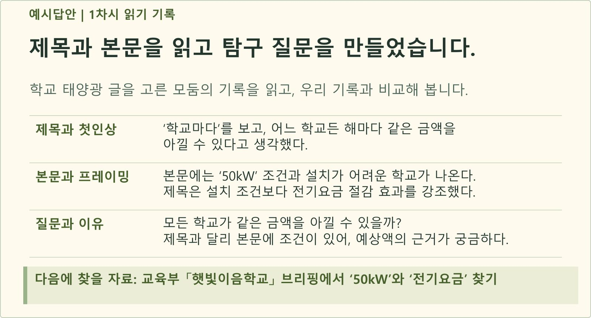
프레이밍 분석과 질문 — 1차시 예시답안 (최종보고서 · 수업 PPT 20장)
이 차시 슬라이드
수업 PPT 2~20장 · 전체 47장과 PPTX·PDF 내려받기는 프로그램 페이지에 있어요.
나가기 질문
기사만으로 답하기 어려운 점은 무엇이었나요? 어느 표현과 구절을 읽고 그 질문이 생겼는지 한두 문장으로 써요.